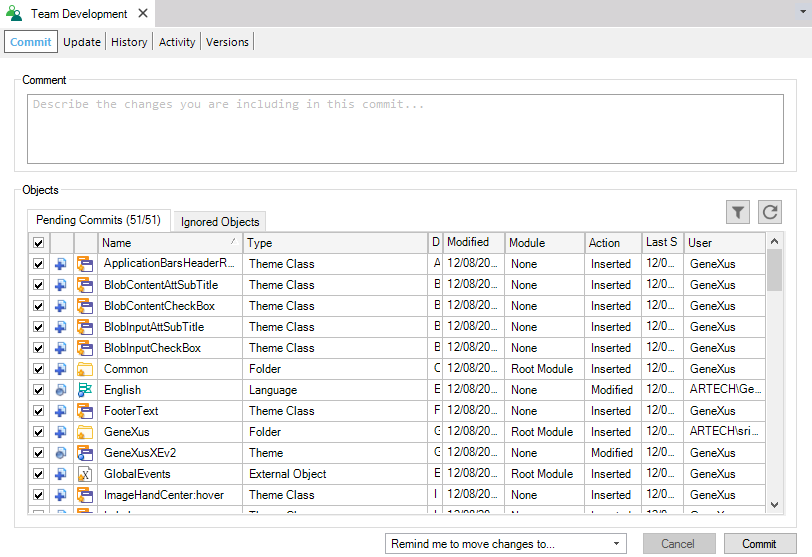
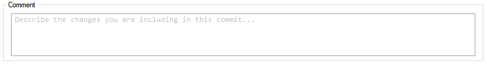
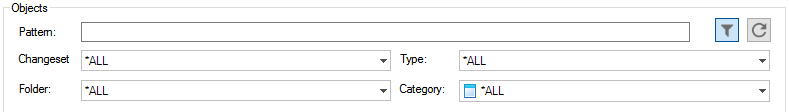
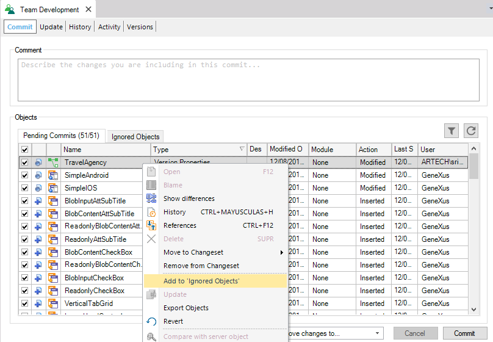
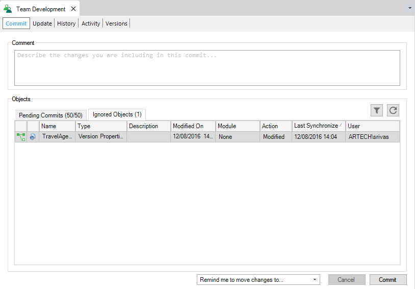

The Commit to Server operation is executed to update a Knowledge Base hosted in a GeneXus Server instance.
Once a set of changes is completed, the Developer must publish them. Publishing changes is called Commit and requires the GeneXus Server to be active and accessible to the Developer.
To perform a Commit operation the Developer must follow the steps below:
1) Select the Knowledge Manager >Team Development menu option to open the Knowledge Manager Team Development dialog and choose the Commit tab.

2) Press the Refresh button to load the set of objects that have been changed locally since the last Commit operation.
3) The Developer can select/deselect the objects to Commit.
4) The developer must type a Comment detailing what these changes mean (explaining the changes to another Developer). As a rule of thumb write a simple, one-line sentence that briefly explains the Commit and then write a few more sentences providing greater detail.

5) Click the Commit button to finish. All the changes will be packaged and sent to the GeneXus Server and the Knowledge Base will be updated. Use the Team Development output section (Output window) to verify that the Commit operation was successful.
Note:

Using the Add to ignored objects option from the contextual menu the Developer will be able to ignore objects so that they are not sent. These will be included in the list in the Ignored Objects tab and left there until they are (explicitly) recovered in a future Commit operation.


Note: Filters can be applied using the Filter option:
| Column | Description |
|---|---|
| Selection Checkbox | Used to select whether the object is included in the Commit operation. |
| Action Icon | Displays an icon showing the action performed to the object. |
| Object Icon | Displays the icon of the object. |
| Name | Displays the Name property of the object. |
| Type | Displays the object Type property. |
| Description | displays the Description property of the object. |
| Modified On | Last date when the object was modified—causing to be included in the pending commit list. This property column does not behave as the "Modified On" of the History dialog. |
| Module | Module to which the object belongs to. |
| Action | the action performed to the object, the possible values are: Inserted, Modified or Deleted. |
| Last Synchronized | Displays the date of the last synchronization, in other words, the time where the object was Updated or created by the Create Knowledge Base from GeneXus Server operation. |
| User | User who performed the last modification. |
Please see Bring Changes Reminder to understand fully how to use this feature.
The Commit Number can be used to Bring Changes/Bring All Changes from another Development Version
ChangeSets in GeneXus Server
Partial Commit to GeneXus Server
Update From GeneXus Server
Revert Object Operation
Warn When Adding Or Removing Objects From Selection Property